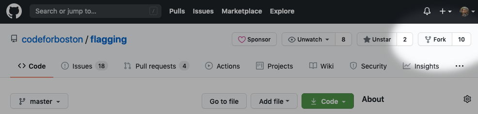
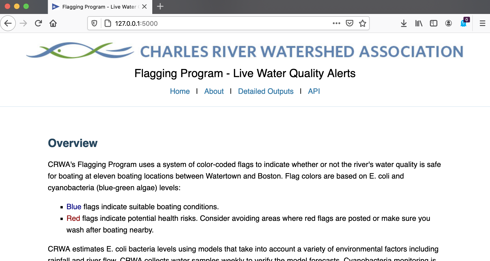

Setup
This is a guide on how to do your first-time setup for running the website locally and getting ready to make changes to the code base. If you are a developer, you should follow this guide before doing anything else!
This guide assumes you're a complete beginner at Python, Git, Postgres, etc. so don't be intimidated if you don't know what all of these things are. The main thing this guide assumes is that you know how to open up a terminal in your respective operating system (command prompt or "CMD" in Windows, and bash in OSX).
Dependencies
Install all of the following programs onto your computer:
Required:
- Python 3 - specifically 3.7 or higher
- Git (first time setup guide here)
- Postgres (see installation instructions below)
- 7zip (If on OSX, install via Homebrew:
brew install p7zip) - (OSX only) Homebrew
Recommended:
- A good text editor or IDE, such as Atom.io (which is lightweight and beginner friendly) or PyCharm (which is powerful but bulky and geared toward advanced users).
- Heroku CLI (required for remote deployment to Heroku.)
Other:
- It is strongly recommend that you create a GitHub account if you haven't done so already. The GitHub account should have the same email as the one registered to your
git config --global user.emailthat you set in the first time git setup.
Warning
(Windows users only) At least two Windows users have had problems getting Python working in Windows for the first time. Check out some people troubleshooting various Python installation related issues on StackOverflow. Also note that the command to run Python in Windows may be python, python3, py, or py3. Figure out which one works for you.
Postgres installation
-
Download here and install via the executable.
-
(If you had any terminals open, close out and reopen after Postgres installation.)
-
Open command prompt and try the following (case-sensitive):
psql -VIf it returns the version number then you're set. -
If you get an error about the command not being recognized, then it might mean you need to manually add Postgres's bin to your PATH (see here).
-
If you do not have Homebrew installed, install it from here.
-
Via a bash terminal:
brew install postgres -
Test that it works by running (case-sensitive):
psql -V. If it returns the version number then you're set.
Tip
Chances are you are not going to need Postgres to run in the background constantly, so you should learn how to turn it off and back on.
Turn Postgres on/off:
-
Go to the Start menu and open up "Run..."
-
services.msc-> Enter. This opens the Services panel. -
Look for the name postgresql and start/stop Postgres.
Keep Postgres from running at startup:
(Via the Services panel) As long as the service is "manual" and not automatic, it will not load at startup.
Turn Postgres on:
pg_ctl -D /usr/local/var/postgres start
Turn Postgres off:
pg_ctl -D /usr/local/var/postgres stop
Keep Postgres from running at startup:
Some solutions here.
Download and Setup the Code Base
The flagging website is open source; the whole website's source code is available on GitHub. This section of the setup guide shows you the preferred way to install it and set up the code on a local computer.
- Fork the main GitHub repo to your personal GitHub account. You can do that by going to the Code For Boston flagging repo and clicking on this button:

-
Point your terminal (Bash on OSX, command prompt on Windows) to the directory you want to put the
/flaggingproject folder inside of. E.g. if you want the project folder to be located at<yourname>/Documents/flagging, then point your directory to<yourname>/Documents. You can change directories using thecdcommand:cd "path/goes/here" -
Run the following to download your fork and setup the connection to the upstream remote. Replace
YOUR_USERNAME_HERE(in the first line) with your actual GitHub username.
git clone https://github.com/YOUR_USERNAME_HERE/flagging/
cd flagging
git remote add upstream https://github.com/codeforboston/flagging.git
git fetch upstream
- In your newly created
flaggingfolder, create a file called.envand add the vault password to it. (Replacevault_password_herewith the actual vault password if you have it; otherwise just copy+paste and run the command as-is):
echo "VAULT_PASSWORD=vault_password_here" > .env
Danger
If you do any commits to the repo, please make sure .env is properly gitignored! (.flaskenv does not need to be gitignored, only .env.) The vault password is sensitive information; it should not be shared with others and it should not be posted online publicly.
Run the Website Locally
Note
From here on in the documentation, each terminal command assumes your terminal's working directory is pointed toward the flagging directory.
After you get everything set up, you should run the website at least once. Te process of running the website installs the remaining dependencies, and sets up a virtual environment to work in.
- Run the following:
run_windows_dev
sh run_unix_dev.sh
Note
The script being run is doing the following, in order:
- Set up a "virtual environment" (basically an isolated folder inside your project directory that we install the Python packages into),
- install the packages inside of
requirements.txt; this can take a while during your first time. - Set up some environment variables that Flask needs.
- Prompts the user to set some options for the deployment. (See step 2 below.)
- Set up the Postgres database and update it with data.
- Run the actual website.
Tip
If you are receiving any errors related to the Postgres database and you are certain that Postgres is running on your computer, you can modify the POSTGRES_USERNAME and POSTGRES_PASSWORD environment variables to connect to your local Postgres instance properly.
- You will be prompted asking if you want to run the website with mock data. The
USE_MOCK_DATAvariable is a way to run the website with dummy data without accessing the credentials. It is useful for anyone who wants to run a demo of the website regardless of their affiliation with the CRWA or this project. It has also been useful for development purposes in the past for us.
Tip
- If you have a working
VAULT_PASSWORD, type N -> Enter. This runs the website as normal. - If you do not have the
VAULT_PASSWORD, type Y -> Enter to turn on mock data.
- Now just wait for the database to start filling in and for the website to eventually run.
Success
You should be good if you eventually see something like the following in your terminal:
* Serving Flask app "flagging_site:create_app" (lazy loading)
* Environment: development
* Debug mode: on
* Running on http://127.0.0.1:5000/ (Press CTRL+C to quit)
* Restarting with stat
- Point your browser of choice to the URL shown in the terminal output. If everything worked out, the website should be running on your local computer!
